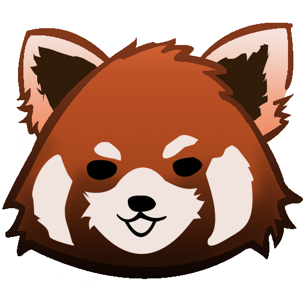
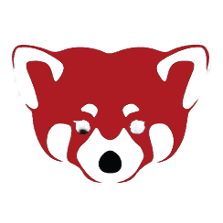

 Cel mai drăguț animal roșu
Panda roșu (Ailurus fulgens) este o rudă de dimensiunea unei pisici a ratonilor și a dihorilor. Deși se credea că este o rudă a ursului panda, prin analize moleculare s-a constatat că nu face parte din familia urșilor.
Este cunoscut și sub numele de „ursul pisică”, „pisica vulpe”, „vulpea de foc” sau „ratonul de Himalaya”. Capul și corpul măsoară până la 66 cm lungime, iar coada poate avea 50 cm lungime. Blana sa pufoasă are o culoare roșcat-castanie, cu pete albe pe față și inele negre pe coadă.
Informații
Dacă vrei să aflii mai multe despre acest minunat animal urs-pisică-raton asiatic, urmărește unul din link-urile de mai jos.


Donează
Panda-ul roșu este, din păcate, o specie pe cale de dispariție, însă există în continuare organizații care se luptă pentru protejarea acestor creaturi minunate.
